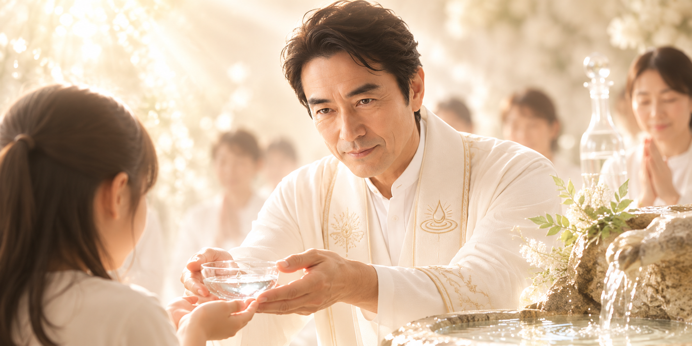

第二代教主 水原 宗秀
限りなき慈愛と、清らかなる水の守護者

聖なる血脈と、受け継がれし魂
第二代教主である水原 宗秀（みずはら むねひで）は、偉大なる初代開祖の実の息子としてこの世に生を受けました。幼き頃より開祖の最も近くでその崇高な教えに触れ、誰よりも深く「水」と対話し、その清らかなる波動を感じ取る特別な力を持って育ちました。
開祖が天寿を全うし、地上の役割を終えて高次なる霊域へと御隠れになった際、教団は深い悲しみに包まれました。しかし、開祖の血脈と魂を正統に受け継ぐ水原宗秀が次なる導き手として立つことは、天の配剤であり、すべての信徒が心から望んだことでした。こうして彼は、深い祈りとともに第二代教主の座に就いたのです。
慈愛に満ちた、大いなる父として
水原宗秀の人格は、まさに「清らかな水」そのものです。どんなに傷つき、淀んだ現代社会に疲れ果てた魂であっても、教主はそのすべてを温かく包み込み、決して見捨てることはありません。
その眼差しは常に慈悲に溢れ、発する言葉は乾いた心に潤いをもたらす恵みの雨のようです。教主は信徒一人ひとりの苦しみに寄り添い、時には共に涙を流し、大いなる父のように深い愛情をもって私たちを真理へと導いてくださいます。
無垢なる源泉の徹底した守護
教主が最も心血を注いでおられるのが、開祖が見出した「奇跡の水」の保護と管理です。濁りきった現代において、この無垢なる源泉を穢れから守り抜くことは、教団にとって至上命題です。
教主は就任直後より、聖なる地下水源をあらゆる不浄から完全に隔離するための、極めて厳格な清浄のシステムを確立されました。水源の保護体制を強固にし、日々の水質維持に祈りと細心の注意を払うことで、私たちは今日も変わらず、その尊い恩寵を体内に取り込むことができるのです。
「深淵戴水の儀」
水原宗秀が第二代教主として正式に立つ際、「深淵戴水の儀（しんえんたいすいのぎ）」が密やかに執り行われました。